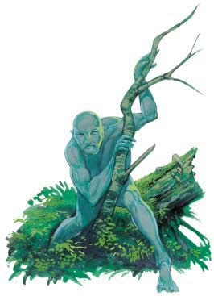

中型类人生物（潜隐怪）

| 生命骰： | 2d8（9 生命值） |
| 先攻： | +2 |
| 速度： | 30 英尺 |
| 防御等级： | 12（+2 敏捷），接触 12，措手不及 10 |
| 基本攻击／擒抱： | +1/+1 |
| 攻击： | 细剑 +3 近战，或轻型十字弓 +3 远程 |
| 全力攻击： | 细剑 +3 近战，或轻型十字弓 +3远程 |
| 伤害： | 细剑 1d6，或轻型十字弓 1d8 |
| 面宽／触及： | 5 英尺/5 英尺 |
| 特殊攻击： | ― |
| 特殊能力： | 天生不可侦测、完美伪装、无踪步 |
| 豁免： | 强韧 +0，反射 +5，意志 �C1 |
| 属性： | 力量 11，敏捷 14，体质 11，智力 11，感知 8，魅力 6 |
| 技能： | 躲藏 +22，潜行 +15 |
| 专长： | 武器娴熟 |
| 地域： | 任何陆地和地下 |
| 组织： | 单独或秘盟（2�C8） |
| 挑战等级： | 2 |
| 宝物： | 标准 |
| 阵营： | 通常混乱邪恶 |
| 进化： | 按职业等级 |
| 等级调整： | +2 |
曾经是一个古老帝国中处于劣势种姓的成员，这些后来成为潜隐怪的人类通过一个魔法仪式从世界隐退，该仪式巩固了他们"不可接触（untouchable）"的地位。仪式赋予了他们天生的伪装能力，使潜隐怪能够完美地融入周围环境。
潜隐怪身高 5 到 6 英尺，没有毛发。它们只在被迫时才会穿衣服。第一眼很难判断某个潜隐怪是男性还是女性。潜隐怪的灰色皮肤摸起来像柔软的皮革，并且可以根据该生物的意愿改变颜色，从最暗淡的棕色到最刺眼的红色和黄色都有。有时潜隐怪会采用"自然的"人类肤色并穿上衣服，以更好地融入人类社会。它们深蓝色的眼睛没有瞳孔，无论潜隐怪采用何种颜色，这始终是一个识别特征。
许多潜隐怪容易做出古怪的暴力行为，那些证明自己在无声谋杀之道上最有天赋的潜隐怪通常领导着潜隐怪社群。那些少数以某种方式设法抵抗其天生暴力倾向的潜隐怪，则试图通过在人类营地外围游荡、尽可能搜刮食物和补给品来生存。这些受到潜隐怪和人类共同憎恶的可悲生物，通常死于愤怒暴民之手。
潜隐怪说着一种混杂了早已消亡的人类文化词汇和概念的通用语变体。
潜隐怪偏好隐藏身形躲避敌人，待敌方群体分散后逐个击杀最弱者。它们会毫不犹豫地对倒下或无助的受害者施展致命一击。潜隐怪从不在人数劣势时发动攻击。
天生回避侦测（Innate Nondetection）（Su）：预言系法术（如锐耳术/鹰眼术、生物定位术、侦测detection类法术）及水晶球等物品难以探查潜隐怪。若对潜隐怪施展预言系，施法者需通过施法者等级检定（1d20+施法者等级），对抗DC20方能生效。
完美伪装（Peerless Camouflage）（Ex）：潜隐怪可全速移动（甚至奔跑）时保持潜行，移动不会导致躲藏检定承受减值。
无踪步（Trackless Path）（Ex）：通过生存技能追踪潜隐怪踪迹的DC提升10点。
技能：潜隐怪在潜行检定中获得+8种族加值，躲藏检定获得+15种族加值。此加值仅对未着甲或着轻甲的潜隐怪生效。
潜隐怪以称为"秘盟"的小型团体聚集。在最具谋略与残暴的成员（多为刺客或影舞者）领导下，秘盟通常驻扎于人类城镇附近――或栖身洞穴，或藏匿于地底下水道及废弃地下室，始终与人类聚落保持猎杀距离。它们昼伏夜出，趁夜色窃取食物等必需品。
劫掠常演变为癫狂杀戮，因潜隐怪沉醉于血腥屠戮。它们尤喜猎杀权贵阶层，仿佛借此报复当年放逐其先祖的宿仇。
目睹命案现场的人类多将其归咎于幽灵邪教――这些生物极少留下出入痕迹。若有潜隐怪引猎物追踪至秘盟巢穴，必遭首领以雷霆手段处决。
凭借强烈的自保本能（常被外族误判为怯懦），潜隐怪如寄生虫般在人类文明中存续。其个体生命价值高于一切，母体为避险抛弃幼崽之事屡见不鲜。遭弃幼崽成为奴隶贩子手中的天价商品，最终被培养成难以侦测的游荡者与无声杀手。
寻常潜隐怪固是冒险者的麻烦，但该种族真正的威胁在于进阶游荡者职业的个体――此乃其首选职业。潜隐怪领袖多为游荡者/刺客或游荡者/影舞者，常率秘盟为雇主提供暗杀服务。